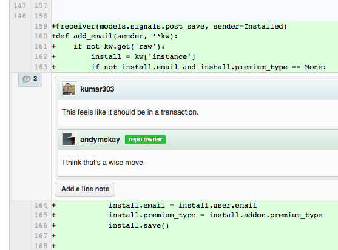

findFactorsOf(inputNum, candidate = 2) {
if (inputNum <= 1) {
return [];
} else {
if (inputNum % candidate === 0) {
return [candidate].concat(
this.findFactorsOf(inputNum / candidate, candidate)
);
} else {
return this.findFactorsOf(inputNum, candidate + 1);
}
}
}
findFactorsOf(inputNum) {
const primeFactors = [];
let candidate = 2;
while (inputNum > 1) {
while (inputNum % candidate === 0) {
primeFactors.push(candidate);
inputNum /= candidate;
}
candidate++;
}
return primeFactors;
}
describe('Prime Factors Finder', () => {
const primeFactorsFinder = new PrimeFactorsFinder();
const inputsAndOutputs = [
[1, []], [2, [2]],
[3, [3]], [4, [2, 2]],
[6, [2, 3]],
[8, [2, 2, 2]],
[9, [3, 3]]
];
inputsAndOutputs.forEach((inputAndOutput) => {
const input = inputAndOutput[0];
const output = inputAndOutput[1];
it(`should return [${output}] for prime factors of ${input}`, () => {
expect(primeFactorsFinder.findFactorsOf(1)).toEqual([]);
});
});
});
describe('Finding Prime Factors of a Number in Ascending Order', () => {
const primeFactorsFinder = new PrimeFactorsFinder();
it('should return empty list for 1, since 1 is considered to have no prime factors',()=>{
expect(primeFactorsFinder.findFactorsOf(1)).toEqual([]);
});
it('should return the number itself when the number is prime',() => {
expect(primeFactorsFinder.findFactorsOf(2)).toEqual([2]);
});
it('should return two prime numbers that when multiplied give the input number',()=>{
expect(primeFactorsFinder.findFactorsOf(4)).toEqual([2, 2]);
});
it('should return more than two prime numbers that when multiplied give the input',()=>{
expect(primeFactorsFinder.findFactorsOf(8)).toEqual([2, 2, 2]);
});
it('should find the prime factors of a non-even, non-prime number',() => {
expect(primeFactorsFinder.findFactorsOf(9)).toEqual([3, 3]);
});
});
countTriangles(input) {
const listsOfSidesForPossibleTriangles = input.split('\n');
let count = 0;
listsOfSidesForPossibleTriangles.forEach((possibleTriangle) => {
const sides = input.match(/(\d+)/g);
let isTriangle = false;
if (sides.length === 3) {
const sideA = parseInt(sides[0]);
const sideB = parseInt(sides[1]);
const sideC = parseInt(sides[2]);
isTriangle = sideA + sideB > sideC &&
sideB + sideC > sideA && sideC + sideA > sideB;
}
if (isTriangle) {
++count;
}
});
return count;
}
countTriangles(input) {
const listsOfSidesForPossibleTriangles = input.split('\n');
return this.countTrianglesInList(listsOfSidesForPossibleTriangles);
}
countTrianglesInList(listsOfSidesForPossibleTriangles) {
return listsOfSidesForPossibleTriangles.filter(this.isValidTriangle).length;
}
isValidTriangle(input) {
const sides = input.match(/(\d+)/g);
if (this.hasThreeSides(sides)) {
return this.couldBeTriangleGivenSideLengths(sides);
} else {
return false;
}
}
hasThreeSides(sides) {
return sides.length === 3;
}
couldBeTriangleGivenSideLengths(sides) {
const sideA = parseInt(sides[0]);
const sideB = parseInt(sides[1]);
const sideC = parseInt(sides[2]);
return sideA + sideB > sideC && sideB + sideC > sideA && sideC + sideA > sideB;
}
http://freecode.com/projects/cruciblecodereview
https://www.atlassian.com/software/crucible
Github Code Reviews

https://blog.mozilla.org/webdev/2011/11/21/git-using-topic-branches-and-interactive-rebasing-effectively/

https://www.thoughtworks.com/insights/blog/effective-navigation-in-pair-programming
countTriangles(input) {
const possibleTriangles = input.split('\n');
let count = 0;
possibleTriangles.forEach((possibleTriangle) => {
const sides = input.match(/(\d+)/g);
if (this.isValidTriangle(sides)) {
++count;
}
});
return count;
}
isValidTriangle(sides) {
if (sides.length === 3) {
const sideA = parseInt(sides[0]);
const sideB = parseInt(sides[1]);
const sideC = parseInt(sides[2]);
return sideA + sideB > sideC &&
sideB + sideC > sideA &&
sideC + sideA > sideB;
} else {
return false;
}
}